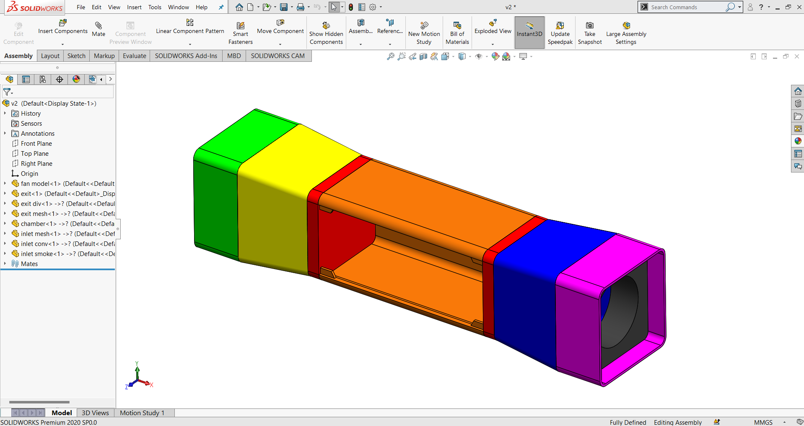
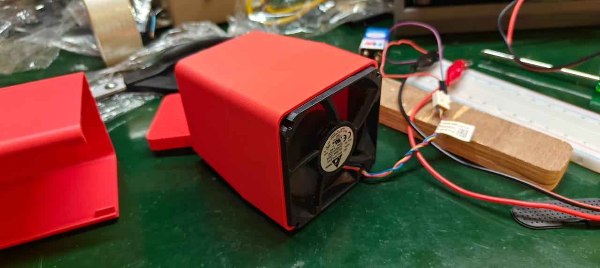

System Integration is all about explaining the entire system of the project, aiming to build a functional.
Bringing together all project elements: This includes integrating custom-designed PCBs (from Electronics Design and Production), input devices, output devices, mechanical parts (from Computer-Controlled Machining, 3D Printing, Molding and Casting), and the programmed microcontroller (from Embedded Programming).
Ensuring communication and functionality: The core of system integration is making sure all these different parts can "talk" to each other and operate as intended. This involves:
Hardware Integration: Physically connecting devices, ensuring proper power supply, and managing wiring. Students often use connectors, design custom casings, and consider the physical layout for a neat and functional assembly.
Software Integration: Writing or adapting code to make different modules work together seamlessly. This might involve combining various libraries, managing sensor data, controlling multiple outputs, and ensuring correct timing and synchronization.
Data Integration: If the project involves data from different sources (e.g., multiple sensors), ensure that this data is collected, processed, and utilized effectively.
Application Integration: If there's a user interface or an external application, ensure it interacts correctly with the physical system.
Packaging and Enclosure Design: A significant aspect of system integration in Fab Academy is designing and fabricating an enclosure for the final project. This involves:
Aesthetics: Making the project look like a finished product, not just a collection of circuit boards and wires.
Functionality: Ensuring the enclosure provides adequate protection, allows for proper ventilation, and provides access to necessary ports or controls.
Space Optimization: Designing the enclosure to house all components compactly and efficiently, often minimizing wiring by careful placement.
Testing and Debugging: This is an iterative process during system integration. Students rigorously test the integrated system to identify and troubleshoot:
Mechanical issues: Ensuring parts fit together correctly, mechanisms move smoothly, and there are no structural weaknesses.
Electrical problems: Checking for short circuits, incorrect wiring, power issues, and component failures.
Software bugs: Debugging code to ensure correct logic, reliable communication between modules, and desired behavior.
Documentation: A critical part of the Fab Academy methodology, and especially for system integration, is thorough documentation. Students are expected to:
Create system diagrams: Visual representations of how all components are connected and interact.
Detailed assembly steps: Documenting the process of putting the project together.
Explain design choices: Justifying decisions made regarding component placement, wiring, and enclosure design.
Show progress and challenges: Documenting iterations, mistakes, and solutions found during the integration process.
System Integration of the final project:
For the final project, we are designing a Tabletop wind tunnel aiming to study the wind flow around a die-cast car and other objects. This model will be very helpful for educators and hobbyists to understand the aerodynamics of different objects.
Tabletop wind tunnel:
Hardware Exploration:
This is the basic sketch of the different systems integrated into this project. A wind tunnel chamber, an electronics control box, and a smoke generator.
Block Diagram:
CAD Design
Exploded View of Wind Tunnel

Slicing for 3d printing using Creality
The center zone is the laminar flow zone, so printed without top and bottom layer, infill with 30%, and a hexagon pattern.

Electronics Design
List of electronics components used in this project.